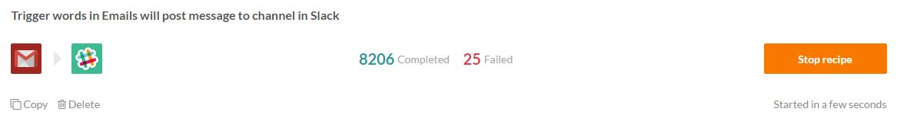

Starting & stopping recipes
Starting recipes
Click on 'Start recipe' to activate the recipe i.e. look for trigger events to process.
If you have already run your recipe in 'test' mode, the 'Start recipe' button should be displayed, otherwise, this button is available in the dropdown beside 'Test recipe'.

After you have started the recipe, the recipe becomes an 'Active' recipe. On your home page, you can filter by active recipes to see all the active recipes.
Stopping recipes
Stop the recipes when they are no longer relevant, or to make changes.

When you start the recipe again, Workato remembers the last processed event, and will start processing from there so you do not miss any trigger events when your recipe was stopped.
Why are my recipes automatically stopped?
There are 2 reasons for this:
Recipes are automatically stopped when the monthly transaction limit is hit. Contact our customer success team to add more transactions.
There are more than 60 consecutive errors in receiving trigger events. In this case, address the underlying cause (e.g. API password change, etc.) and restart the recipe.

Restarting recipes
Starting a stopped recipe will pick up jobs from where it last stopped.
For example, if I stopped my recipe on January 1st, 10:30pm, and start it again on January 10th, 7pm, it will begin picking up jobs from January 1st, 10:31pm onwards.
If you wish for the recipe to only start picking up new jobs from January 10th onwards, copy the recipe and change the 'From' date. The 'copy' button is below the recipe name.

Notifications email
Anytime there is an error when processing a recipe, an email is sent. By default, this email is sent to your Workato account login email. You can change this, or add additional recipients by setting your notifications email in your account settings.